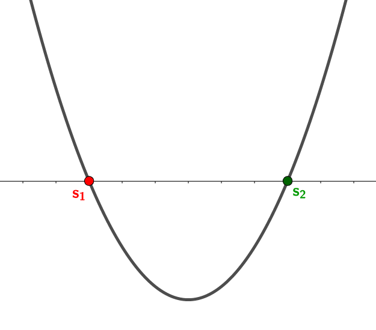
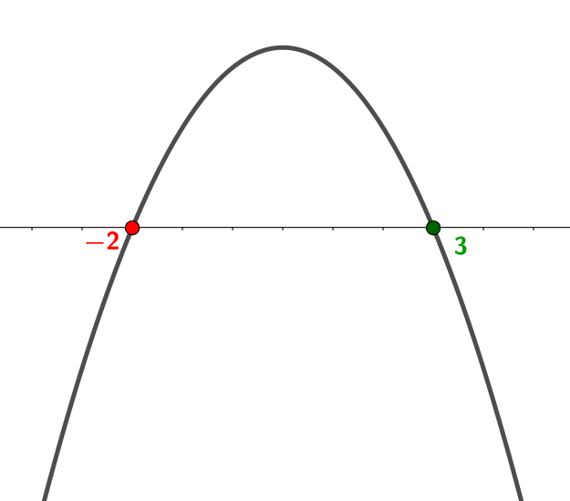

- in funzione del coefficiente \(\color{blue}{a}\);
- in funzione delle soluzioni \(\color{red}{s_{1}}\) ed \(\color{rgb(0, 153, 0)}{s_{2}}\) dell'equazione associata al polinomio
Provate a variare \(\color{blue}{a}\), \(\color{red}{s_{1}}\) ed \(\color{rgb(0, 153, 0)}{s_{2}}\) tramite gli slider ed osservate come cambia la figura.
Riassumendo:
-
risolviamo l'equazione associata \(ax^2 + bx + c = 0\), ottenendo le soluzioni
\(\color{red}{s_{1}}\) ed \(\color{rgb(0, 153, 0)}{s_{2}}\).
Queste indicano le ascisse dei punti di intersezione della parabola con l'asse delle \(x\); -
osserviamo il segno del coefficiente \(\color{blue}{a}\).
-
se \(\color{blue}{a} \color{black}{} \gt 0\) allora la concavità della parabola è verso
l'alto;
 -
se \(\color{blue}{a}\color{black}{} \lt 0\) allora la concavità della parabola è verso il
basso;

-
se \(\color{blue}{a} \color{black}{} \gt 0\) allora la concavità della parabola è verso
l'alto;
Esempi
Rappresentare graficamente il polinomio \[ 2x^2 +2x -4 \]
-
Risolviamo l'equazione associata \(2x^2 +2x -4 = 0\):
\( x = \dfrac{-2 \pm \sqrt{2^2 -4 \cdot 2 \cdot \left(-4\right)}}{2 \cdot 2} = \)
\( = \dfrac{-2 \pm \sqrt{4 +32}}{4} = \dfrac{-2 \pm \sqrt{36}}{4} = \)
\( = \dfrac{-2 \pm 6}{4} \)
\( x = \color{red}{-2} \color{black}{} \quad\text{oppure}\quad x = \color{rgb(0, 153, 0)}{1} \)
Di conseguenza la parabola interseca l'asse delle \(x\) in corrispondenza di \(x = \color{red}{-2}\) e \(x = \color{rgb(0, 153, 0)}{1}\)
-
Guardiamo il polinomio \[ \color{blue}{2}\,\color{black}{}x^2 +2x -4 \]
Il coefficiente \(\color{blue}{a}\) ha valore \(\color{blue}{2}\), dunque ha segno positivo. Di conseguenza la parabola ha la concavità verso l'alto.
Abbiamo tutti gli elementi per disegnare la parabola:

Esempio 2
Rappresentare graficamente il polinomio \[ -x^2 +x +6 \]
-
Risolviamo l'equazione associata \(-x^2 +x +6 = 0\):
\( x = \dfrac{-1 \pm \sqrt{1^2 -4 \cdot \left(-1\right) \cdot 6}}{2 \cdot \left(-1\right)} = \)
\( = \dfrac{-1 \pm \sqrt{1 + 24}}{-2} = \dfrac{-1 \pm \sqrt{25}}{-2} = \)
\( = \dfrac{-1 \pm 5}{-2} \)
\( x = \color{red}{-2} \color{black}{} \quad\text{oppure}\quad x = \color{rgb(0, 153, 0)}{3} \)
Di conseguenza la parabola interseca l'asse delle \(x\) in corrispondenza di \(x = \color{red}{-2}\) e \(x = \color{rgb(0, 153, 0)}{3}\)
-
Guardiamo il polinomio \[ \color{blue}{-}\,\color{black}{}x^2 +x +6 \]
Il coefficiente \(\color{blue}{a}\) ha valore \(\color{blue}{-1}\), dunque ha segno negativo. Di conseguenza la parabola ha la concavità verso il basso.
Abbiamo tutti gli elementi per disegnare la parabola:
